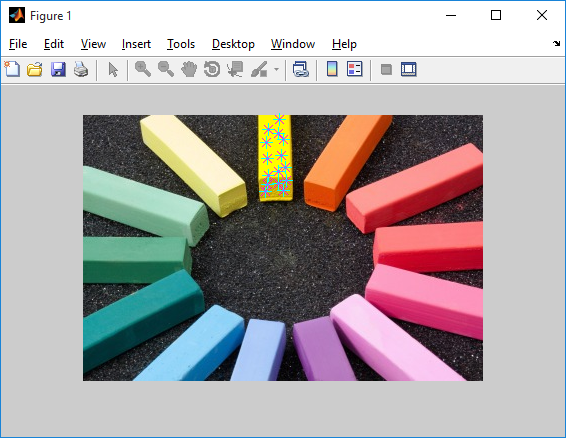

Image Thresholding Technique
Image thresholding is a simple way of detecting specific objects in the image. This technique converts RGB or grayscale images into binary image that has the object of interest seperated out. The binary image has the object of interest marked in white and rest of the image in black (or vice-versa) depending on how you threshold.
Choosing Threshold Values
The values for thresholding are choosen based upon the pixel intensities of the objects of interest in the image. There are multiple ways to look at these values.
One way is to use imshow(img) and use the pixel info tool to see the RGB values of specific pixels. You can also use imtool(img) and point the cursor at specific pixels to see the RGB values at the bottom right of the window.
A better way to keep track of all these pixel values in an image is by using the function impixel. It is used with the following syntax.
%% Finding pixel values
values = impixel(img);
A new window pops up when the above command is executed where you can click on the object at a specific pixel and the RGB values of that pixel are stored in values. You can keep clicking at multiple point in the region of interest so that you have all the values stored in the variable values. You can stop choosing by double clicking on one of the pixels.

And there you have the pixel values that you need to threshold in the matrix values. When you finish selecting pixels, impixel returns a m x 3 matrix of RGB values in the supplied output argument. You can now look at the data inside values and see what are the ranges of red, green and blue intensity values in your image. Initialize the following variables depending on that data: redMin, redMax, greenMin, greenMax, blueMin, blueMax.
Here's a sample of the values.
%% Choosing the pixel values
redMin = 200; redMax = 255;
greenMin = 170; greenMax = 255;
blueMin = 0; blueMax = 15;
Splitting an image into RGB channels
An image can be split into RGB channels in MATLAB by using the following piece of code.
%% Splitting into channels
red = img(:,:,1); % filters first layer
green = img(:,:,2); % filters second layer
blue = img(:,:,3); % filters third layer
% Displaying the result
figure, subplot(1,3,1), imshow(red)
subplot(1,3,2), imshow(green)
subplot(1,3,3), imshow(blue)
The output is shown below.
Thresholding code in MATLAB
The required region or object must satisfy the condition that it's pixel values vary in the limits defined above. That can be implemented in one line in MATLAB using the following code.
%% Thresholding
out = red>=redMin & red<=redMax & green>=greenMin & ...
green<=greenMax & blue>=blueMin & blue<=blueMax;
figure, imshow(out)
out will be a binary image with required object marked in white and others in black.
But understand that this code cannot be applied to all images. It can be applied only when the object to be detected is of the different color from the rest. In the image that we are using, direct thresholding was not good enough to detect the block perfectly. We how to do that using image enhancement in the next section.